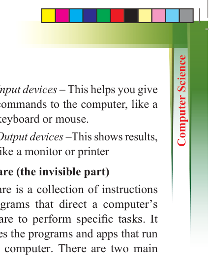
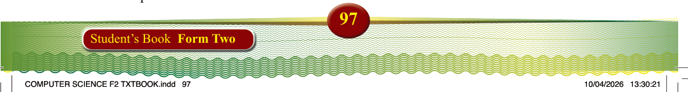
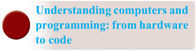

97
Student’s Book Form Two
Exercise 3.1
1. Why is computer programming important in today’s world?
2. What
are
some
real-world
applications of programming?
3. How do programming languages help developers create software?
4. Can you name a few programming languages and what they are used for?

Understanding computers and
programming: from hardware
to code
What makes a computer work?
A computer functions because of a
combination of hardware and software.
Hardware carries out the tasks, while software provides the instructions to follow. Together, they allow the
computer to perform different functions and respond to user commands.
Hardware (the physical part)
Hardware is the part of a computer you can see and touch. The main parts of the hardware are:
(i)
CPU (Central Processing Unit) –
This is the computer’s brain that
follows instructions in programs.
(ii) RAM (Main Memory) – This stores data that the computer uses currently. It is fast but temporary.
(iii) Storage (Hard Drive or SSD) –
This saves data for later use, such as photos or schoolwork.
(iv) Input devices – This helps you give commands to the computer, like a keyboard or mouse.
(v) Output devices –This shows results, like a monitor or printer
Software (the invisible part)
Software is a collection of instructions
or programs that direct a computer’s hardware to perform specific tasks. It
includes the programs and apps that run
on the computer. There are two main
types:
(i)
System software – Helps the computer run, like Windows or
macOS.
(ii) Application software – Lets you
do tasks like typing, drawing, or
browsing the Internet.
There are also tools like virus scanners
and backup programs that help keep the computer safe and fast.
How computers store data
Computers use binary, which is just
0s and 1s, to store everything—words,
pictures, music, and more.
(i)
A “bit” is a single 0 or 1.
(ii) A “byte” is 8 bits, and can store one small piece of information, like a letter.
For example:
(i)
The letter “A” is stored as
01000001
(ii) The number “157” is stored as
10011101